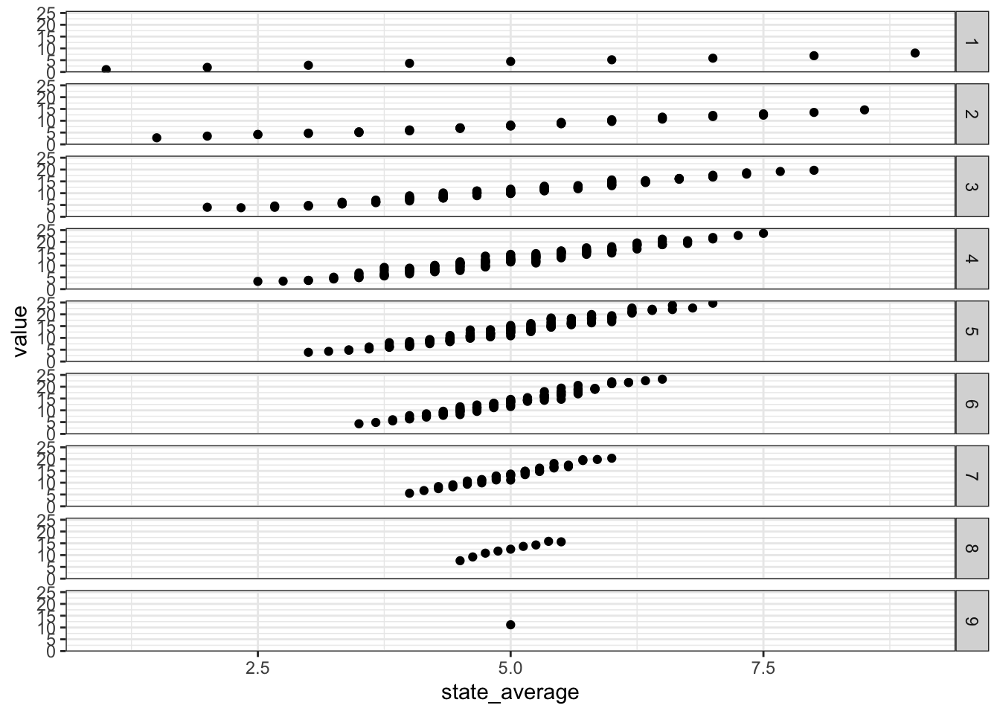

ddice <- function(x) {
probs <- c(1, 2, 3, 4, 5, 6, 5, 4, 3, 2, 1) / 36
out <- numeric(length(x))
# Return 0 if the element is not in 2 to 12
is_valid <- x >= 2 & x <= 12
out[is_valid] <- probs[x[is_valid] - 1]
return(out)
}
ddice(1:12)
#> [1] 0.00000000 0.02777778 0.05555556 0.08333333 0.11111111 0.13888889
#> [7] 0.16666667 0.13888889 0.11111111 0.08333333 0.05555556 0.02777778Shut the box
Finding the optimal “shut the box” strategy.
A few years ago I went to Thailand with some friends. We played some bar games, and one of them was called Shut the Box.
TODO: picture.
The board has numbers 1 to 9. Each turn, you roll two dice. You can then flip or “shut” any combination of numbers which sum to the total of the two dice. The game ends when you can no longer make a valid move. You win the game if no numbers are left.
We all played and started to develop our own strategies. I knew that the sum of two dice is most likely to be 7 and convinced myself that this was the knowledge needed to win. As 7 was the most likely sum, and 1, 2 and 3 were the least likely, I thought it best to prioritise shutting 1, 2 and 3. I completely ignored the combinatorics!
My friend’s strategy was to prioritise 7, 8 and 9 if it was possible to shut them, and if not, to prioritise the smallest numbers. He did much better! But I’ve always wondered if I could find the mathematically optimal strategy.
Thinking about this as a stochastic optimisation problem, we can model the game as a Markov decision process.
Markov decision processes
A Markov decision process models the evolution of a system over time. At each time step, an agent makes a decision that affects the future state of the system.
The process has a state space \(S\) and evolves in discrete time steps \(t = 1, 2 \ldots\)
At each time step, the agent chooses from a set of possible actions. Typically, the set of available actions depends on the current state \(s \in S\), and is denoted \(A(s)\).
Given a state \(s \in S\) and an action \(a \in A(s)\), the system transitions to a new state \(s'\) according to a transition probability \(P(s' \mid s, a)\). Each transition gives a reward \(R(s, s', a)\). These transition probabilities are Markovian – the next state depends only on the current state and action, not on the history of past states and actions.
The goal of the agent is to choose actions that maximise (or minimise!) the expected cumulative reward over time. This means finding a policy \(\pi(s)\) – a probabilistic mapping of states to actions – which maximises the expected total reward.
Our model
For a game of Shut the Box, the state space \(S\) consists of all possible subsets of the numbers 1 to 9. The state represents the set of numbers that are not shut. The game starts with all numbers open, \(s = \{1, 2, \ldots, 9\}\).
The available actions at state \(s\) depend on the total \(d\) of two dice. \(A_d(s)\) is the set of all subsets of \(s\) whose elements sum to \(d \in \{ 2, 3, \ldots, 12\}\). The chosen action \(a \in A_d(s)\) represents the numbers to shut on that turn.
For example, say the remaining numbers were \(s = \{1, 2, 3, 4, 5\}\), and we roll \(d = 8\), we could shut \(A_8(s) = \{\{3, 5\}\), \(\{1, 2, 5\}\), or \(\{1, 3, 4\}\}\).
The transitions between different states are deterministic based on this choice, so \(s' = s \setminus a\).
We play over the discrete time steps \(t = 1, 2, \ldots\) and the game ends when there are no valid moves left, \(A_d(s) = \emptyset\). At that point a cost is incurred: \[R(s) = \sum_{i \in s} i.\]
Our goal is to find a policy \(\pi(s, d)\) that minimises the expected cost.
Solution
Let \(V(s)\) be the expected cost at the end of the game when proceeding from state \(s\).
For a given dice roll \(d\), define: \[ V_d(s) = \begin{cases} \min\limits_{a \in A_d(s)} V(s \setminus a) & \text{if } A_d(s) \ne \emptyset \\ \sum\limits_{i \in s} i & \text{otherwise} \end{cases} \]
Then the overall expected cost is: \[V(s) = \sum_{d=2}^{12} P(d) \cdot V_d(s)\]
where \(P(d)\) is the probability of rolling two dice which sum to \(d\).
If no valid actions remain, then \(V(s)\) is equivalent to the final reward: \[V(s) = R(s) = \sum_{i \in s} i.\]
Using dynamic programming, we can compute the expected cost for each state \(s\) by iterating over all possible states and actions.
First we create a function to compute the probability of rolling two dice which sum to \(d\):
Next we create a function to compute the set of valid actions for a given state and dice total:
library(purrr)
valid_actions <- function(s, d) {
if (d < 2 || d > 12) {
stop("Dice total must be between 2 and 12.")
}
# The combn function doesn't handle vectors of length 1 as we intended, so
# we handle the special case here
if (length(s) == 1) {
return(if (s == d) list(s) else list())
}
subsets <- map(1:length(s), function(x) combn(s, x, simplify = FALSE)) |>
flatten()
valid_subsets <- keep(subsets, function(x) sum(x) == d)
return(valid_subsets)
}
valid_actions(1:5, 8)
#> [[1]]
#> [1] 3 5
#>
#> [[2]]
#> [1] 1 2 5
#>
#> [[3]]
#> [1] 1 3 4We can implement the value function to compute the expected cost of a given state. We use memoisation to speed up the computation:
library(memoise)
value <- function(s) {
# If the state is empty, no cost
if (length(s) == 0) {
return(0)
}
dice_values <- 2:12
dice_probs <- ddice(dice_values)
# For each dice roll, calculate the min value of next state if valid actions exist
expected_costs <- map2_dbl(dice_values, dice_probs, function(d, p) {
acts <- valid_actions(s, d)
if (length(acts) == 0) {
# No valid action, the game ends and we incur cost
return(p * sum(s))
}
# Otherwise, take the best (minimal) value among next states
min_cost <- map_dbl(acts, function(a) value(setdiff(s, a))) |> min()
return(p * min_cost)
})
# Expected cost is weighted average over all dice outcomes
sum(expected_costs)
}
value <- memoise(value)
value(8)
#> [1] 6.888889
value(c(2, 6))
#> [1] 5.969136And finally, for a given state and dice total, we can compute the optimal action to take:
optimal_action <- function(s, d) {
actions <- valid_actions(s, d)
if (length(actions) == 0) {
return(NULL)
}
# Evaluate each possible next state and pick the one with the lowest value
values <- map_dbl(actions, function(a) value(setdiff(s, a)))
best_index <- which.min(values)
return(actions[[best_index]])
}
optimal_action(1:5, 8)
#> [1] 3 5Results
simulate_game <- function(state = 1:9) {
cat("🎲 Starting a game of Shut the Box!\n")
cat("Tiles open:", paste(state, collapse = " "), "\n\n")
turn <- 1
while (length(state) > 0) {
cat(glue::glue("Turn {turn}"))
turn <- turn + 1
# Roll two dice
dice_values <- 2:12
d <- sample(dice_values, 1, prob = ddice(dice_values))
cat("\nRolled:", d, "\n")
acts <- valid_actions(state, d)
if (length(acts) == 0) {
cat("No valid actions! Game over.\n")
cat("Tiles left:", paste(state, collapse = " "), "\n")
cat(glue::glue("Final score (sum of remaining tiles): {sum(state)}"))
cat("\n")
return(invisible(NULL))
}
a <- optimal_action(state, d)
cat("Action taken:", paste(a, collapse = " "), "\n")
state <- setdiff(state, a)
cat("Tiles now:", ifelse(length(state) == 0, "(none - you've shut the box!)", paste(state, collapse = " ")), "\n\n")
}
cat("🏆 Congratulations, you've shut the box!\n")
cat("Final score: 0\n")
}
simulate_game()
#> 🎲 Starting a game of Shut the Box!
#> Tiles open: 1 2 3 4 5 6 7 8 9
#>
#> Turn 1
#> Rolled: 8
#> Action taken: 8
#> Tiles now: 1 2 3 4 5 6 7 9
#>
#> Turn 2
#> Rolled: 4
#> Action taken: 4
#> Tiles now: 1 2 3 5 6 7 9
#>
#> Turn 3
#> Rolled: 5
#> Action taken: 5
#> Tiles now: 1 2 3 6 7 9
#>
#> Turn 4
#> Rolled: 3
#> Action taken: 3
#> Tiles now: 1 2 6 7 9
#>
#> Turn 5
#> Rolled: 6
#> Action taken: 6
#> Tiles now: 1 2 7 9
#>
#> Turn 6
#> Rolled: 8
#> Action taken: 1 7
#> Tiles now: 2 9
#>
#> Turn 7
#> Rolled: 8
#> No valid actions! Game over.
#> Tiles left: 2 9
#> Final score (sum of remaining tiles): 11
simulate_game()
#> 🎲 Starting a game of Shut the Box!
#> Tiles open: 1 2 3 4 5 6 7 8 9
#>
#> Turn 1
#> Rolled: 12
#> Action taken: 3 9
#> Tiles now: 1 2 4 5 6 7 8
#>
#> Turn 2
#> Rolled: 7
#> Action taken: 7
#> Tiles now: 1 2 4 5 6 8
#>
#> Turn 3
#> Rolled: 5
#> Action taken: 5
#> Tiles now: 1 2 4 6 8
#>
#> Turn 4
#> Rolled: 5
#> Action taken: 1 4
#> Tiles now: 2 6 8
#>
#> Turn 5
#> Rolled: 4
#> No valid actions! Game over.
#> Tiles left: 2 6 8
#> Final score (sum of remaining tiles): 16
simulate_game()
#> 🎲 Starting a game of Shut the Box!
#> Tiles open: 1 2 3 4 5 6 7 8 9
#>
#> Turn 1
#> Rolled: 8
#> Action taken: 8
#> Tiles now: 1 2 3 4 5 6 7 9
#>
#> Turn 2
#> Rolled: 11
#> Action taken: 2 9
#> Tiles now: 1 3 4 5 6 7
#>
#> Turn 3
#> Rolled: 6
#> Action taken: 6
#> Tiles now: 1 3 4 5 7
#>
#> Turn 4
#> Rolled: 7
#> Action taken: 7
#> Tiles now: 1 3 4 5
#>
#> Turn 5
#> Rolled: 10
#> Action taken: 1 4 5
#> Tiles now: 3
#>
#> Turn 6
#> Rolled: 9
#> No valid actions! Game over.
#> Tiles left: 3
#> Final score (sum of remaining tiles): 3library(dplyr)
#>
#> Attaching package: 'dplyr'
#> The following objects are masked from 'package:stats':
#>
#> filter, lag
#> The following objects are masked from 'package:base':
#>
#> intersect, setdiff, setequal, union
library(ggplot2)
all_states <- map(0:9, function(x) combn(1:9, x, simplify = FALSE)) |> flatten()
policy_table <- tibble(
state = all_states,
label = map_chr(all_states, function(x) paste(x, collapse = ",")),
value = map_dbl(all_states, value)
)
policy_table |>
mutate(
state_average = map_dbl(state, mean),
number_of_elements = map_dbl(state, length)) |>
select(state_average, value, number_of_elements) |>
filter(number_of_elements > 0) |>
ggplot(aes(state_average, value)) +
geom_point() +
facet_grid(vars(number_of_elements)) +
theme_bw()